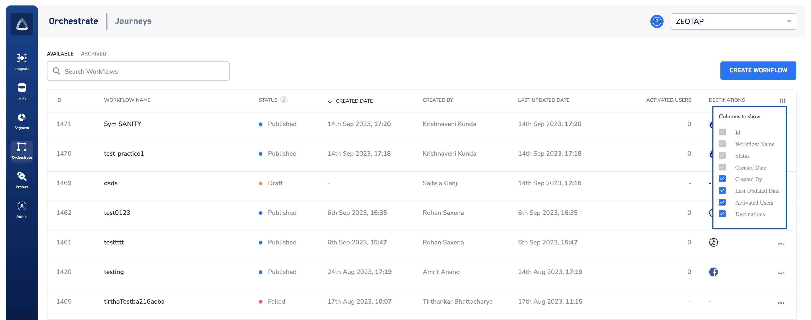

Once you have created a workflow, you can find it listed under the WORKFLOWS tab displaying various information.

The listing screen provides the following information:
Workflow ID
Workflow Name
Status
Created Date – This is the date when the workflow was first published.
Created By – This is the user who created the workflow.
Destinations – These are the destinations linked to the workflow.
Last Updated Date – This is the date when the workflow was updated and saved. Note that the ‘Last Updated Date’ can change either due to a change in the workflow definition or due to status change, like pausing a workflow.
Activated Users – This is the total number of users sent out by the workflow in the last 7 days.
Other actions – You can perform the following actions on the workflows:
Edit – You can only edit a published workflow. However, it is important to note that when editing a published workflow, you cannot modify the workflow name and the entry condition. Note: If you delete a delay node while editing, the existing users in that delay will be removed from the workflow.
Pause/Resume – You can pause or resume a workflow based on your business need. Once a workflow is paused, no new users can qualify for the workflow until it is resumed and the existing users in the workflow are removed from the workflow and no longer activated. Resuming the workflow will be as good as starting it from scratch.
Archive – You can archive a published workflow. Note that once you archive a published workflow, it is available under the ARCHIVE tab. When you un-archive the workflow, it goes in the draft state. You have to manually publish it again if you want to activate it.